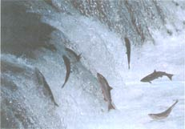

Saving Our Nation's Rivers
American Rivers organization helps public voice views on the damage of hydroelectric plants to waterways and Grizzly's Gifts in Anchorage, Ala. discovers moose dung is hot seller.
By the Mother Earth News editors
April/May 1992
BITS & PIECES
This year alone over 160 hydropower development licenses are about to expire. And if we don't act now, they will be relicensed for another 30 to 50 years. That means that 230 hydropower dams will continue to damage 105 of our country's rivers.
The worst damage results from dam operators who hold water back behind the dam. The water is allowed to gush forth during "peak hours," when energy is in highest demand, and for the rest of the day it trickles. These unnatural conditions destroy river habitat. There is no way for fish to survive migration when water is trickling. Altered water temperature disrupts spawning cycles and destroys breeding grounds. Fish are getting caught in engine turbines; in some parts of the country, we are losing entire species of fish.
The public is also being deprived of recreational white-water rapids, the type of water needed to operate hydropower dams. Since only 1% of the river miles in this country provide quality white-water rapids, the dams drastically reduce our accessibility.
According to American Rivers, a leading organization on river conservation, the problem is mixed-up priorities. Too much concern is given to hydropower's economic value and the electricity being generated, and not enough on keeping our rivers healthy. However, ecology versus energy should not even be an issue. The dams only generate about .002% of the nation's total electricity supply.
So how to go about restoring our rivers? Incorporating fish ladders and screens may help fish pass upstream and downstream and protect them from the churning turbines. American Rivers is also pushing for greater water flow, more recreational accessibility, and the removal of some dam sites.
But the public's help is essential. The Federal Energy Regulatory Commission (FERC), which regulates nonfederal dams, has the final say in which projects get relicensed. The public is allowed to comment on a project's relicensing. If enough people step in, thousands of damaged river miles could be restored.
Says an American Rivers spokesperson, "We have no confidence that FERC will protect our rivers. They are a pro-energy production agency, and it's going to take alot of public outrage to turn things around. "
Caution: Legally intervening can be confusing if you go about it blindly. Showstack suggests calling American Rivers for a packet which has been set up to simplify the process. And there is a time limit. Applicants filed December 31, 1991, and thes public has, depending on the particular site, only up to December 31, 1992 to log in their views. After that, the public is excluded from the decision. For more information, write or call: American Rivers, 801 Pennsylvania Ave., S.E., Suite 400, Washington, D.C. 20003; 202/547-6900.
Hard to Step In, Easy to Wear
Picture this: A small gift box is left for you by that special someone. You open the lid, peer inside, and find ...moose dung?
It may not be romantic. It may even be disgusting. But at Grizzly's Gifts, in Anchorage, Alaska, it's selling like crazy. Although moose dung has never been a favorite outdoors, it has proved surprisingly profitable indoors. Here are just a few popular-selling items: tie tacks, perfume, and - inhale deeply now - lip balm. It's the earrings, however, that are all the rage.
Claims store manager Cathy Jackson: "These moose-poop earrings are truly enticing - not just for holidays, but for all times of the year. People just love them!"
The dried and shellacked brown nugget earrings are attractively set on a card reassuring customers that they are "genuine" (no artificial dung for you). Each pair sells for $1.50 to $2.95, depending on size. According to records, Grizzly's sells between 10,000 to 20,000 pairs a year. No bull.
Undercover Gardening
For those of you who spend considerable time pushing a wheelbarrow around, here's something to make your life a little easier-a lightweight, reinforced wheelbarrow cover.
"The Professional Gardener's Wheelbarrow Cover," is designed to help protect your valuable materials from all sorts of weather. So you can leave fertilizer mixture outside and remain carefree if it rains. So you can store home project materials and dry loads of firewood outside during the winter. And, most importantly, so you don't have to run outside at 3 A.M. during a hailstorm to bring your tools inside. To order, send $9.95 plus $1.50 shipping and handling to "The Loft Collection," 123 Randall Rd., Berlin, MA 01503.
Just Say No to Outrageous Cages
Is your pet simply not satisfied with handfuls of treats or extra-long walks? Well, now you can purchase Spot his own luxury abode. A Pennsylvania-based company has manufactured the chic PetCondo.
The selection ranges from the "Efficiency unit" ($329) all the way up to the "Highrise" ($695). The "Suite" ($495) features a first floor powder room (that's a litterbox to you and me). Your puppy or iguana will thrill to such style options as skylight panels, and/or personalized nameplates. (They come in peach, almond, teal, mauve, or wedgewood blue-you know how finicky animals can be.)
So rent out Spot's doghouse and start pricing condos; if you're lucky, maybe he'll invite you over sometime.
|
|
 |
 |